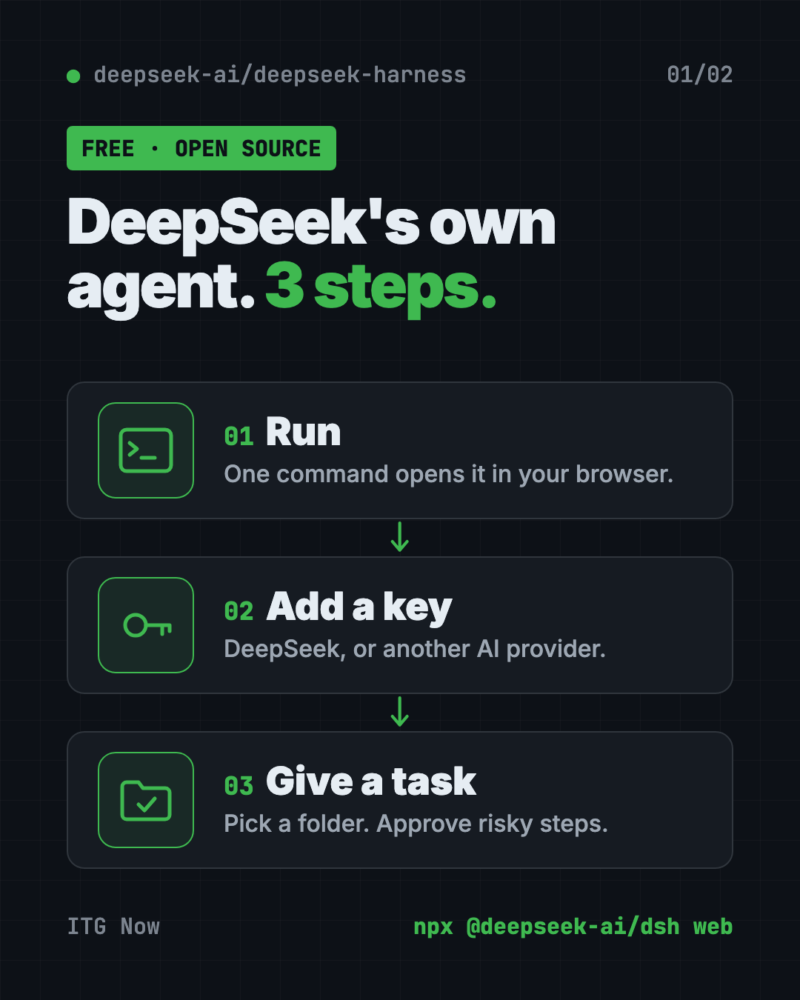
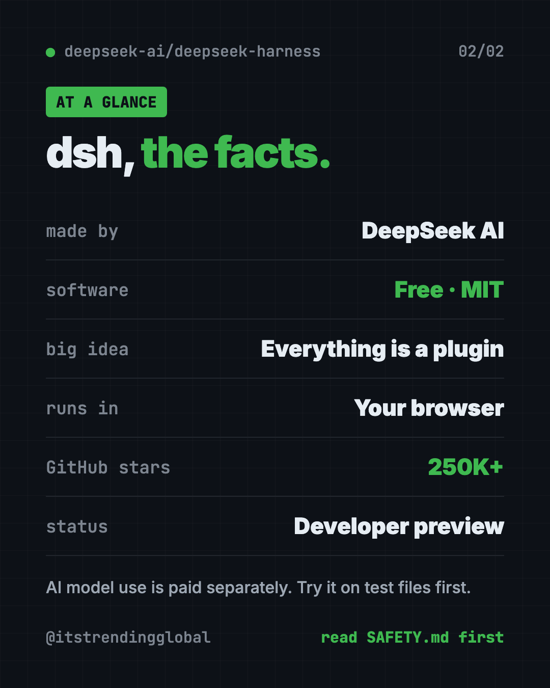

DeepSeek Harness: DeepSeek's Free Open-Source AI Agent
- Published 15 Oct 2026
- Updated 16 Oct 2026
- 8 min read
- License MIT
- By the ITG Now team
DeepSeek Harness is DeepSeek's own free, open-source AI agent. It reads and edits files, runs commands and follows a plan, and every feature inside it is a plugin you can swap, remove or build yourself.
It's still an early developer preview, so it's best for curious tinkerers, not your most important files. Here's what it does, how to start it with one command, and how to stay safe while you try it.
Key takeaways
- Made by DeepSeek AI. It's the AI lab's own agent, shared under the MIT license.
- "Everything is a plugin." You can swap any part, add new ones or write your own.
- One command to start. It opens a web page on your own computer.
- Bring your own model. Add a DeepSeek API key, or connect another provider.
- Early preview. The makers warn, in capital letters, that breaking changes are coming.
What is DeepSeek Harness?
An AI agent is an AI helper that does more than chat. It takes actions. It can open files, change them, run commands and keep a to-do list while it works.
A "harness" is the frame around the AI model. The model is the brain. The harness gives it hands: tools, memory, and a safe way to work on a real project.
DeepSeek Harness, or "dsh" for short, is that frame, made by DeepSeek AI. Its big idea is in the project's own tagline: "Everything is a Plugin." A plugin is an add-on piece. In dsh, even the main features are plugins. So if you don't like how one part works, you can replace it.
It's built on a framework called Cordis. You don't need to know anything about that to use it.
It has about 250.4K stars on GitHub, so a lot of people are watching it. The newest release, v0.2.1-alpha.4, came out on October 15, 2026.

What can the DeepSeek AI agent do?
From the README and its user guide:
- Work in a project folder. You pick a "workspace," and the agent stays inside it.
- Read and edit files in that folder.
- Run commands on your computer.
- Hand off smaller jobs to helper agents.
- Keep a plan as it works through a task.
- Ask before risky steps. The web page asks you first, based on your permission settings.
- Set reminders. You can ask it to remind you daily or on a schedule, and see them on an Automation tasks page.
- Install plugins from a market. An experimental "Discover" tab lets you browse and install plugins from lists you trust.
There's also a Python toolkit and other command-line modes for developers.
How to use DeepSeek Harness (real examples)
- Understand a new project. Point it at a folder and ask, "Summarize this repository and identify its main packages." That's the official first task in the guide.
- Tidy up a messy folder. Ask it to explain what each file does and suggest how to organize them. Approve each change.
- Get a daily nudge. Say "Remind me every day at 9:00 to check my to-do list." The guide shows a similar example.
- Try other AI models. Add an Anthropic, OpenAI, Kimi or GLM key, and compare how each one handles the same task.
- Build your own feature. If you code, write a plugin and tag it "dsh-plugin" on GitHub so others can find it.
💡 Tip: Start with a copy of a project, not the real thing. That way, any mistake the agent makes costs you nothing.
Is DeepSeek Harness free?
The software is free under the MIT license. You can use it, change it and share it, even at work.
The AI model is a separate cost. You connect it with an API key. That's a password-like code that lets the app use a model on your account. DeepSeek's models are a paid service, so check DeepSeek's website for current prices. The same goes for other providers you add.
How to install DeepSeek Harness
These are the steps from the README. You need Node.js, a free program that runs many developer tools. Get it from nodejs.org. You also need an API key from DeepSeek or another supported provider.
Step 1: read the safety notice. The README asks you to review SAFETY.md before running the project. It's short.
Step 2: start it. Open Terminal (Mac) or PowerShell (Windows). Copy and paste this:
npx @deepseek-ai/dsh web
This starts the web page on your own computer and opens it in your browser. By default it lives at this address:
http://127.0.0.1:3080
Step 3: add a model. Open Settings, then Models. Enter your DeepSeek API key and save. It works right away, no restart.
Step 4: pick a folder. Click Choose workspace and add the project folder you want it to work in. You can't start a chat until you do.
Step 5: give it a task. Start a session and type what you want done.
Prefer to build it yourself? The README also lists a "run from source" path:
git clone https://github.com/deepseek-ai/deepseek-harness.git
cd deepseek-harness
pnpm install
pnpm run build
pnpm dsh web
⚠️ Heads up: The safety notice says dsh has not had a security audit and must not be treated as secure. It can run AI-written commands. Mistakes or bad plugins could delete files or leak data.

How to use DeepSeek Harness safely
The makers are unusually direct about risk. Their safety notice suggests:
- Give it as little access as you can. Only the folder it needs.
- Use a throwaway setup. A virtual machine (a computer inside your computer) or a container is best.
- Keep backups of any files it can reach.
- Don't hand it secrets like passwords or private data unless you accept the risk.
- Review plugins and commands before you let them run.
Approval prompts help, but the notice says they don't guarantee safety. Treat dsh like a new intern with keys to one room, not the whole office.
Let Claude or Codex set it up for you
Claude Code and OpenAI Codex are AI helpers that can run setup steps on your computer. You paste a request, it does the steps, and you approve each one.
Copy and paste this:
Please help me try DeepSeek Harness from github.com/deepseek-ai/deepseek-harness.
1. Read its README and SAFETY.md, and sum up the risks for me in plain words.
2. Check if I have Node.js. If not, tell me how to install it.
3. Make a new empty test folder for it to work in.
4. Run "npx @deepseek-ai/dsh web" and tell me the address it opens.
5. Walk me through adding my API key in Settings, then Models.
Then try asking:
Help me set up DeepSeek Harness inside a container so it can't touch my real files.
Explain what a dsh plugin is, and show me how to find ones tagged "dsh-plugin".
I want to use a non-DeepSeek model in DeepSeek Harness. Walk me through adding it.
DeepSeek Harness at a glance
| Price | Free software; model use is paid per your provider |
| Works offline | No, it needs an AI model provider |
| Platforms | Any computer with Node.js, used in your browser |
| License | MIT (open source) |
| GitHub stars | About 250.4K |
| Status | Developer preview (v0.2.1-alpha.4, October 15, 2026) |
| Best for | Tinkerers and developers who want an agent they can reshape |
Our take
DeepSeek Harness is a rare thing: a major AI lab's own agent, fully open for anyone to change. The plugin design means you're never stuck with one company's choices.
What we like:
- Starts with a single command and runs in your browser.
- Works with DeepSeek plus other providers, like Anthropic, OpenAI, Kimi and GLM.
- Honest, clear safety notice.
- MIT license, so businesses can use and adapt it.
- Real extras already, like reminders and a plugin market.
What to watch for:
- It's a developer preview. Things will break between versions.
- No security audit yet, and it can run commands on your machine.
- You pay for the AI model separately.
- The docs are written for developers, so beginners may need help.
Want a more finished AI agent? Compare it with Hermes Agent, a free self-improving AI agent, or nanobot, a tiny personal AI assistant you run yourself. DeepSeek Harness was also number one in our top 5 GitHub repos of August 2026.
FAQ
What is DeepSeek Harness?
It's DeepSeek AI's open-source AI agent, called "dsh." It can read and edit files, run commands and follow a plan, and every feature is a swappable plugin.
Is DeepSeek Harness free?
The software is free under the MIT license. Using DeepSeek's models through an API key is a paid service.
Can I use DeepSeek Harness with Claude or GPT models?
Yes. The model guide lists providers like Anthropic and OpenAI, and you can add a custom model API too.
Is DeepSeek Harness safe to use?
Use care. The makers say it hasn't had a security audit and could change or delete files. They suggest a separate test setup and backups.
How do I install the DeepSeek AI agent?
Install Node.js, then run npx @deepseek-ai/dsh web. A page opens in your browser where you add your API key and pick a folder.
Get DeepSeek Harness: github.com/deepseek-ai/deepseek-harness
More free agents tools
- REA REA (Reverse Engineer Anything) lets an AI agent look inside an app and explain how a feature works, with proof. What it does, what it misses, and the risks.
- DBX DBX is a free database client that opens 100+ kinds of databases in a 25 MB app. Its AI helper turns plain English into database queries for you.
- Moli Moli is a free headless browser for AI agents. It lets AI helpers read, search and use websites fast, while using far less memory than Chrome.
- Artemis Artemis is free AI Android automation from Google. Type a task in plain English and an AI taps, swipes and tests apps on a real Android phone for you.
- OfficeCLI OfficeCLI is free AI for Word, Excel and PowerPoint. It lets AI helpers create, read and edit real Office files, with no Office install needed.
- OpenCut OpenCut is a free CapCut alternative you can use in your browser today. It's open source, and a full rewrite for desktop, mobile and AI agents is on the way.
Latest AI news
- Meta gives away its big Muse Spark AI for free
- Anthropic puts 5% of its shares in a public fund
- World Bank bets on 'small AI' for poorer countries
- Microsoft pulls out of a UK AI data center deal
Keep reading

net-merge: Combine Wi-Fi and Phone Internet, Free
net-merge is a free app to use two internet connections at once, like Wi-Fi plus a phone hotspot, on Windows, Mac and Linux. No account or VPN.

REA: Reverse Engineer Anything With Your AI Agent
REA (Reverse Engineer Anything) lets an AI agent look inside an app and explain how a feature works, with proof. What it does, what it misses, and the risks.

DBX: Free Database Client for 100+ Databases, With AI
DBX is a free database client that opens 100+ kinds of databases in a 25 MB app. Its AI helper turns plain English into database queries for you.